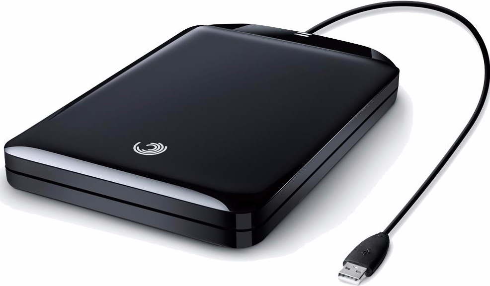
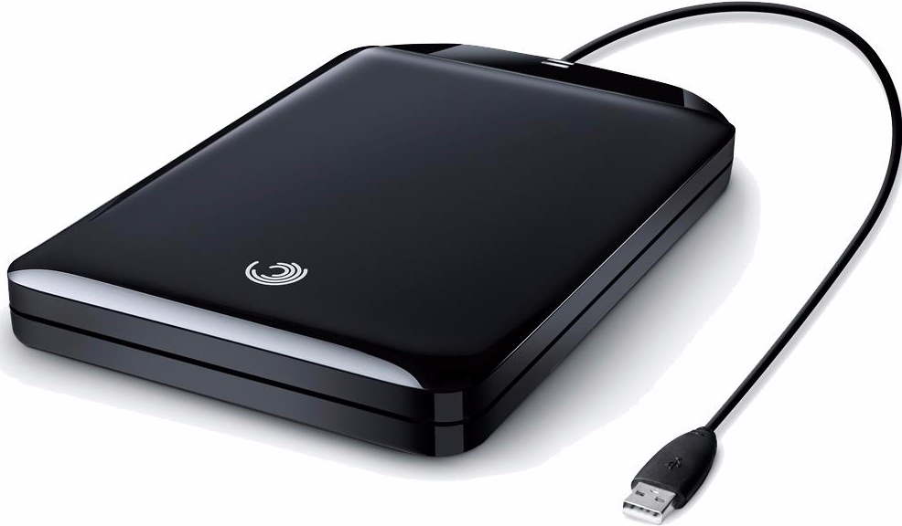
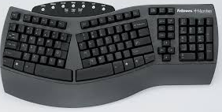

Motherboard
The motherboard contains the physical arrangements of a computer's basic circuitry and components. It also directs power to all the other computer components as well as allowing all the components to communicate with each other.
CPU

The CPU, or central processing unit, processes and carries basic instructions of computer programs. The CPU acts as the brain of the computer. Every bit of information that goes through the computer has to first go through the CPU.
RAM
The RAM requires a power source in order to run. Standing for Random Access Memory, RAM stores and allows a user to retrieve memory. The memory that is stored are things such as browsing history or downloads from the internet. Because these memories are stored on the computer itself, it is easier to access compared to other storage devices such as CDs and hard drives.
Hard Drive
 

A hard drive is used as a permanent place to store information that can be accessed again in the future. If a hard drive were to crash, that information would be lost and would then be unretrievable. This is why it is suggested to store and backup data onto an external hard drive just in case.
Keyboard

On most computers, a keyboard is the primary text input device. That means that it is the main device that sends text information to the computer. Depending on a typing style or needs, some choose an ergonomic keyboard, which allows a user type with their hands in a more natural position.
Mouse


A mouse is used as a primary input device. It is mostly used to direct a cursor on screen to where the user wants it to go as well as allowing a user to to perform many functions such as selecting a certain areas on-screen. People can choose to use a wired mouse that connects it directly to the computer or a wireless mouse that connects through a USB drive and Bluetooth. Mouses on laptops are usually touchpads with two buttons to replicate a handheld mouse but users can choose to use a handheld mouse.
Monitor
The monitor is used to show what computer is doing, whether it be surfing the web or typing an essay. The monitor is how you are able to read this website! Compared to the past, monitors today are able to show text as well as images. Not only that, but monitors today tend to be thinner and lighter for easier transport for computers such as laptops.